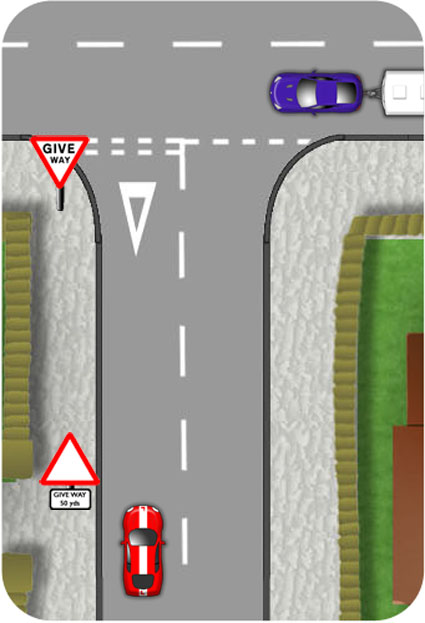

The Give way sign and lines mean that you should allow priority to vehicles beyond them. They should not have to change speed or course as you emerge.
Whether or not you have to stop depends on the visibility and traffic.

Approach
Approach smoothly using the MSM routine nice and early and slowly enough to allow for good observations as you arrive at the line:
Mirrors
Interior and side. Looking for:
- Proximity of following traffic.
- Cyclists or motorbikes which might be thinking of passing.
Signal
Nice and early but not misleading. Wait until you’ve passed any prior side roads.
Manoeuvre
- Position-About one metre from the kerb (left) or just left of the centre line, (right).
- Speed-Off gas, gentle brake as required. Clutch down at about two car lengths and consider the gear as you approach the line.
- Look-Look for and stop for pedestrians crossing or waiting to cross the mouth of the junction. As you arrive at the line, look right as the first traffic you may encounter might be from this direction. Then look left and right again and keep looking as you slow down or stop.
Avoid using the clutch too early as disengaging the engine at a higher speed increases the momentum of the car. This is called 'coasting' and often results in a surge up to the junction. Using the clutch too late, on the other hand, could cause the engine to stall.